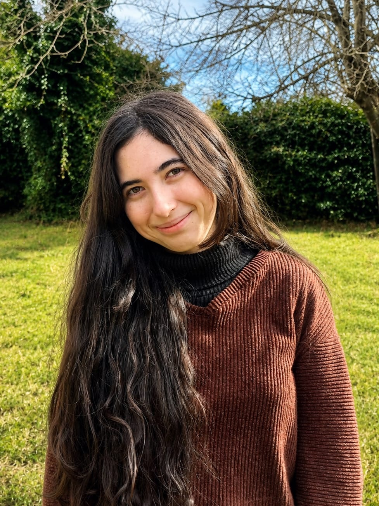
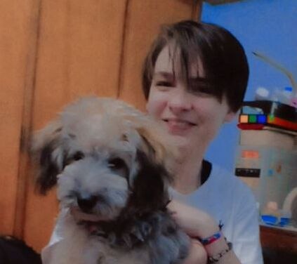
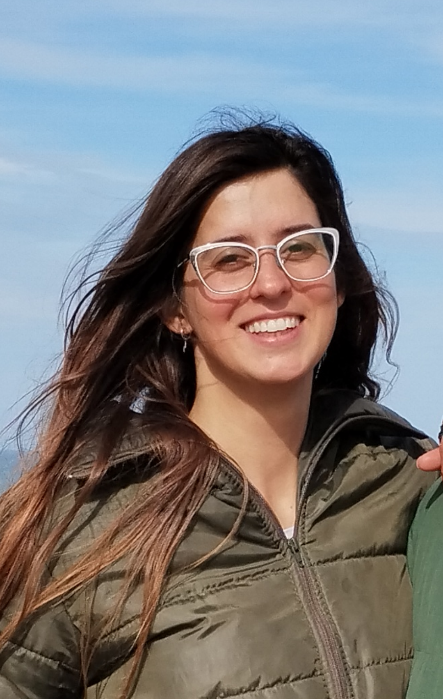

Temática
Elegimos la Costa Atlántica y los balnearios de Miramar. La paleta azul y turquesa acompaña la identidad de playa y mantiene la lectura clara.

Equipo
Somos el equipo que desarrolló BalneApp como proyecto integrador de diseño web. El sitio reúne información de balnearios de Miramar y suma ideas para organizar un día de playa.
Elegimos la Costa Atlántica y los balnearios de Miramar. La paleta azul y turquesa acompaña la identidad de playa y mantiene la lectura clara.
Usamos DummyJSON Recipes para mostrar seis ideas de cocina en tarjetas. El endpoint es https://dummyjson.com/recipes?limit=12; el listado llega en recipes y cada tarjeta usa título, imagen, cocina, tiempo, porciones y calificación.
JavaScript está dividido en módulos: pedirDatos.js consulta la API, Receta.js modela los datos, dibujar.js actualiza el DOM y app.js coordina los estados.
Las recetas son contenido de demostración e inspiración; las reservas o consultas a los balnearios no se envían a un servidor.

Edad: 19 años
Se encargó de definir la identidad visual, la paleta cromática y la organización estética general del sitio.
Rol: Diseño visual
Contactar
Edad: 19 años
Trabajó sobre la estructura semántica de las páginas y la correcta organización de los contenidos.
Rol: Desarrollo HTML
Contactar
Edad: 36 años
Implementó los estilos, la distribución con Flexbox y los efectos visuales de interacción.
Rol: Desarrollo CSS
Contactar